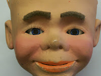
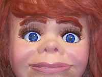

Here's looking at you!
12/5/2011
From P. Grecian: "You made the eye openings bigger without removing the eyes first? Wow. THAT impresses me mightily!"
* * * *
From Mr. D: I decided if my dentist could drill on teeth without removing the teeth, I should be able to do this job without removing the eyes! And my patient looked directly at me through the entire process - never blinked once! Always smiling and without Novocaine. Maybe I should have taken up dentistry.
 |
| The eye openings seemed much to small be visually effective. |
{kind=link}
 |
| It took patient steady hands with my Dremel to carve the openings larger without removing the eyes! |
{kind=link}
From P. Grecian: "You made the eye openings bigger without removing the eyes first? Wow. THAT impresses me mightily!"
* * * *
From Mr. D: I decided if my dentist could drill on teeth without removing the teeth, I should be able to do this job without removing the eyes! And my patient looked directly at me through the entire process - never blinked once! Always smiling and without Novocaine. Maybe I should have taken up dentistry.